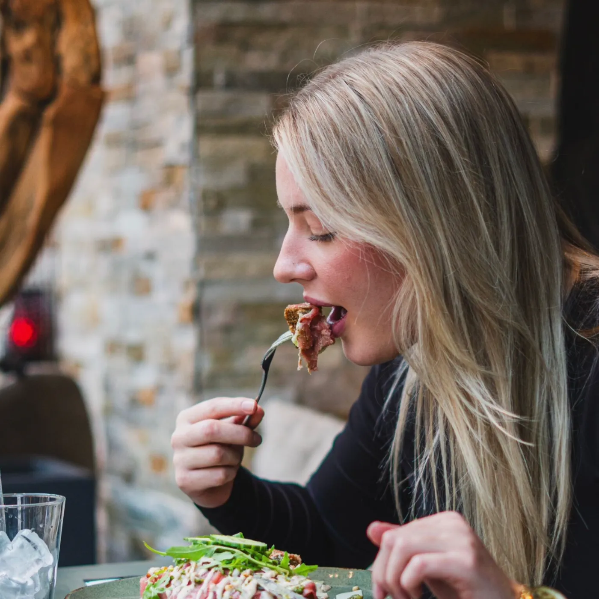
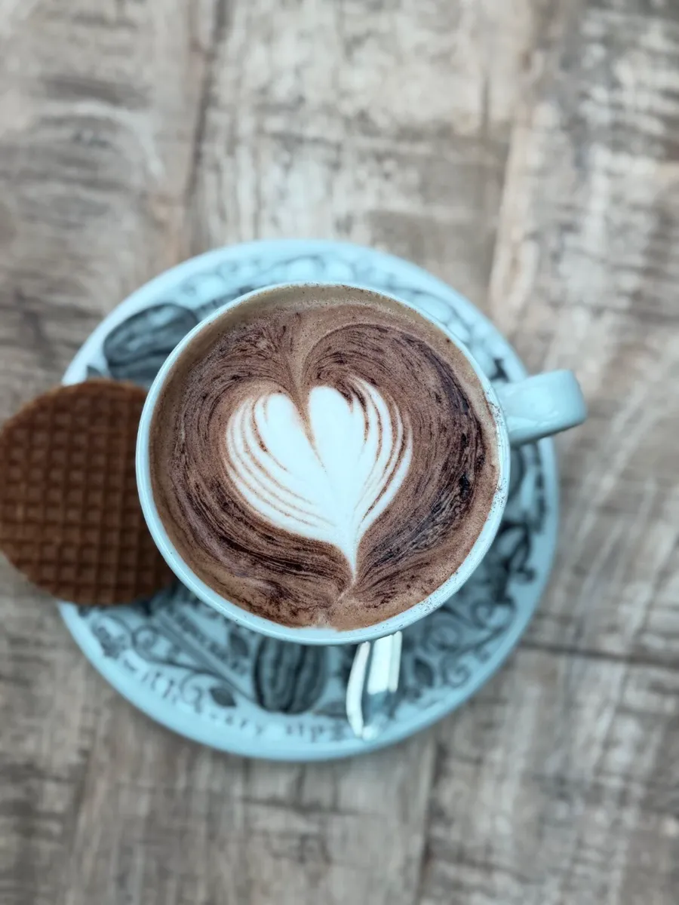
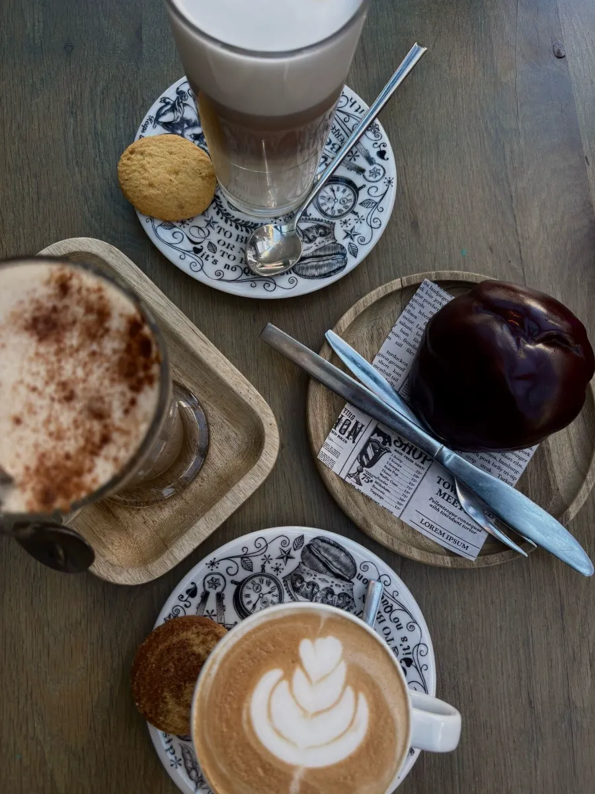
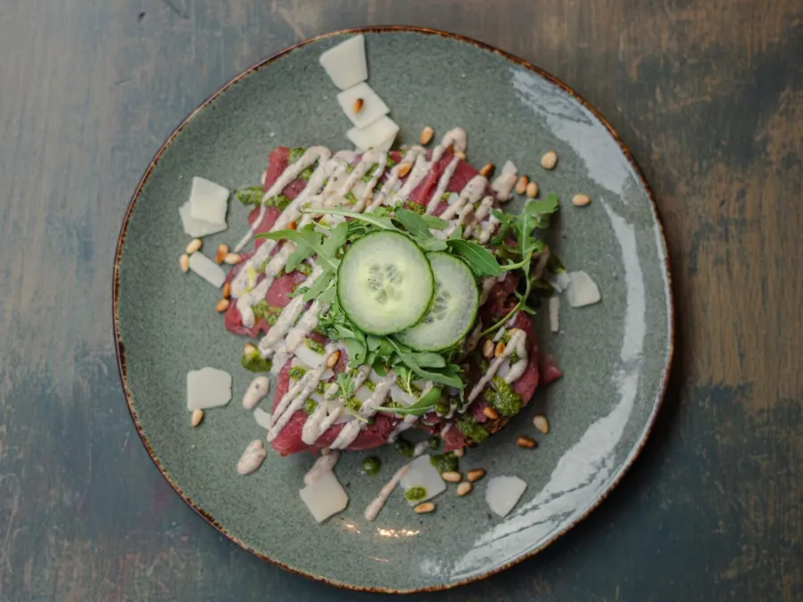
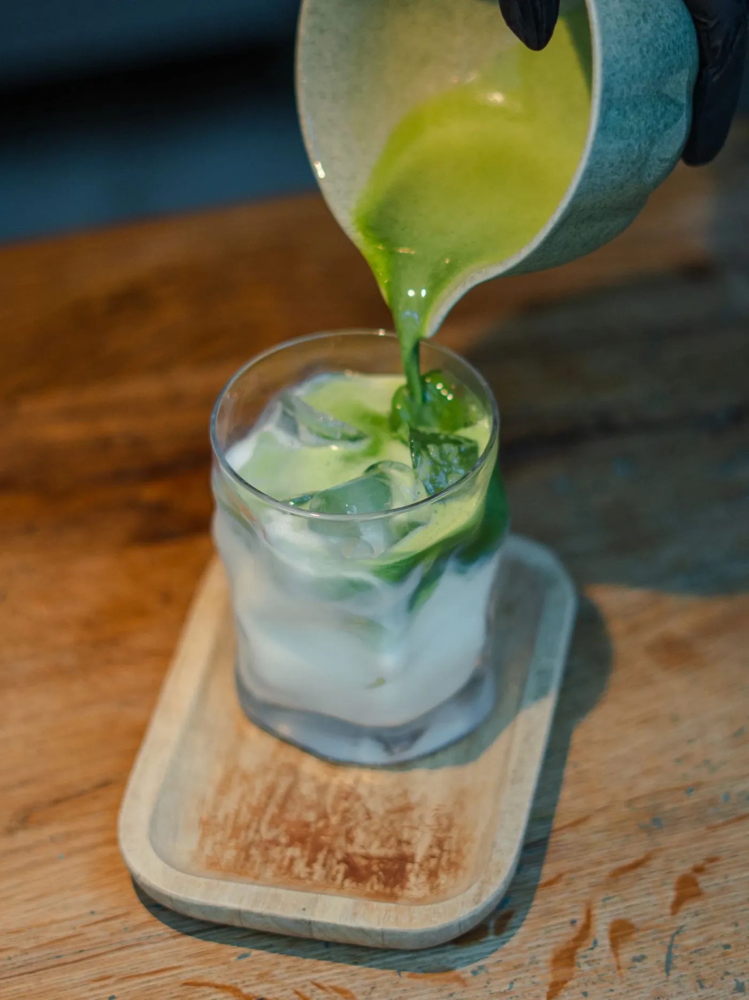
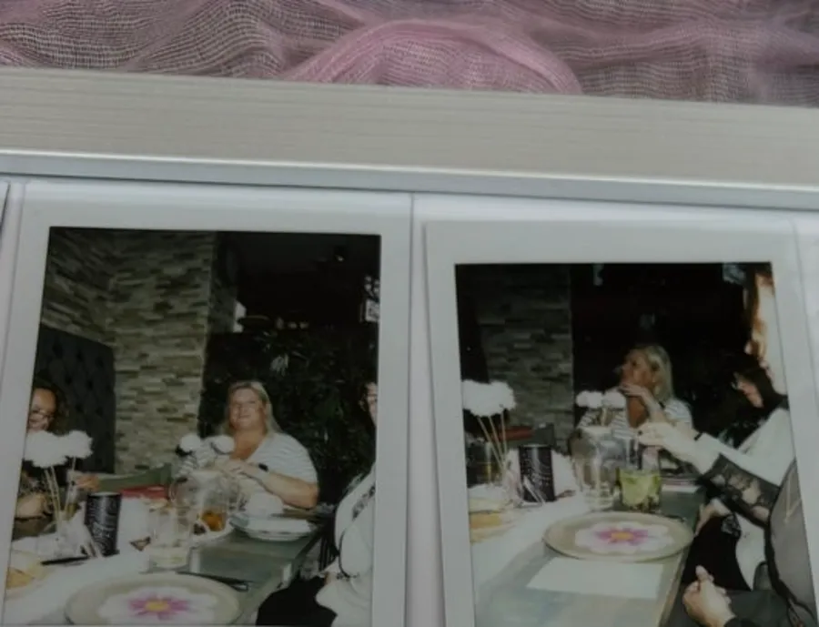
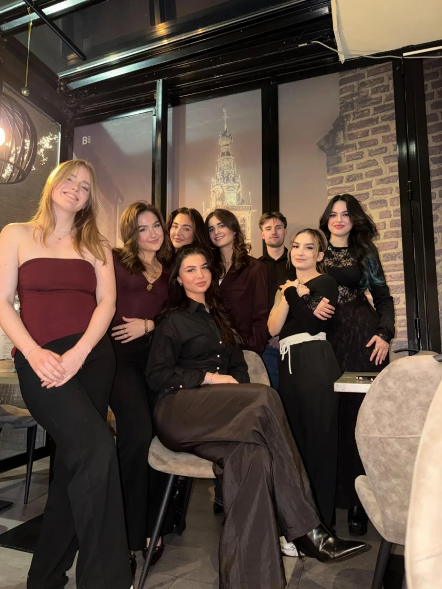
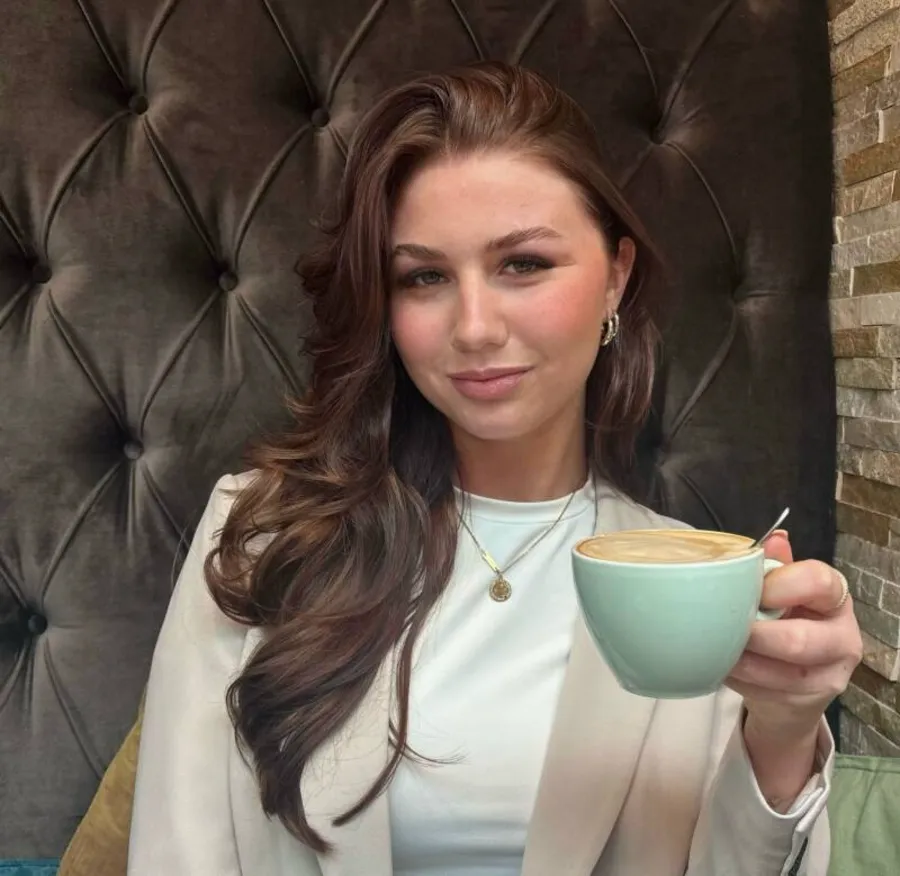
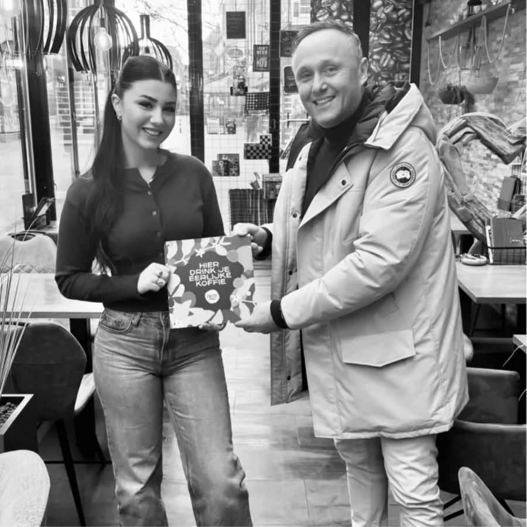

Vandaag open
Koffie, lunch en matcha in de serre aan Plein 1944
Bij De Serre in Nijmegen draait alles om goed eten, gezelligheid en een huiselijke sfeer. Kom langs voor een goede bak koffie, de beste matcha of een uitgebreide lunch en geniet van het uitzicht.



Koffie en gebak Bonen van Peeze, gebak van lokale bakkers
Lunch Vers brood van Bakkerij Bart
Matcha De Serre x Kusa matcha, stel je eigen samenHigh tea arrangement
€20,00 per persoon, minimaal 2 personen
- Thee pot
- Mini MonChou taartjes
- Lotus cheesecakes
- Red velvet cookies
- Brie broodjes
- Zalm broodjes
- Carpaccio broodjes
- Tomaten paprika soepjes
Vier jouw moment bij De Serre
Heb jij iets te vieren en wil je bij ons je evenement organiseren? Dan helpen wij jou graag. Elke zondag kun je bij De Serre terecht voor jouw evenement: denk aan intieme babyshowers, gezellige high tea's, verjaardagen of zakelijke lunches. Wij zorgen voor de perfecte setting.
Neem vrijblijvend contact op voor
- beschikbaarheid op jouw datum
- arrangementen op maat
- speciale wensen of decoratie-ideeën

Over ons
Ons gezellig lunchcafé in het hartje Nijmegen is de ideale plek om even te ontsnappen aan de drukte van de stad. Schuif aan voor een goede bak koffie, een luxe belegd broodje of gewoon een gezellig moment voor uzelf of samen.
De warme sfeer is te danken aan ons hechte en hardwerkende team. Met enthousiasme proberen we ervoor te zorgen dat elke gast zich meteen thuis voelt. Of u nu langskomt voor een snelle lunch of een lange koffiepauze, wij maken er graag iets bijzonders van.
We hopen u snel te mogen verwelkomen bij De Serre in Nijmegen, waar goed eten, gezelligheid en een prachtig uitzicht samenkomen. Zien we u binnenkort in onze serre?
Team De Serre Nijmegen


Als jonge onderneemster steek ik dagelijks mijn hart in De Serre. Wij verwelkomen iedere gast dagelijks met liefde voor het horeca-vak.
Met dank aan onze makers

- Peeze eerlijke en smaakvolle koffiebonen
- Bakkerij Bart ons verse brood
- Kusa matcha de matcha in elke latte
- Banketbakkerij Jan de Groot de echte Bossche bollen
- Strik Patisserie de appeltaart
Veelgestelde vragen
Biedt u vegetarische opties aan?
Ja, ons menu bevat verschillende vegetarische gerechten bereid met verse lokale ingrediënten.
Moet ik reserveren?
Reserveren is bij ons niet nodig. Wilt u zeker zijn van een tafeltje, dan mag u altijd een mailtje doen; een van onze collega's helpt u dan graag verder. Wilt u komen lunchen met meer dan 4 personen, reserveer dan graag even via info@deserrenijmegen.com.
Heeft u parkeergelegenheid?
De dichtstbijzijnde parkeergarage is Mariënburg P5.
Zijn er glutenvrije opties?
Wij bieden ook glutenvrije opties aan voor de lunch. Vraag hierom bij een medewerker, hij of zij helpt je graag verder.
Bezoek ons vandaag nog
| Maandag | 12.00 – 16.00 |
|---|---|
| Dinsdag | 11.00 – 16.00 |
| Woensdag | 11.00 – 16.00 |
| Donderdag | 11.00 – 16.00 |
| Vrijdag | 11.00 – 16.00 |
| Zaterdag | 10.00 – 17.00 |
| Zondag | 12.00 – 17.00 |
Doordeweeks sluit de keuken om 15.30, in het weekend om 16.00.
De Serre Nijmegen
Plein 1944 151a
6511 JH Nijmegen
Gelegen in het centrum van Nijmegen, voor koffie, lunch en matcha.